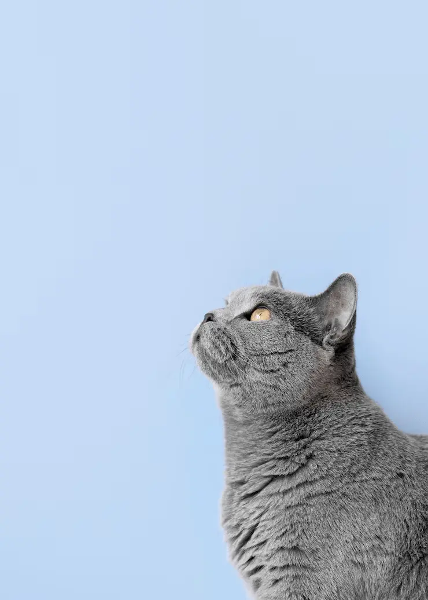
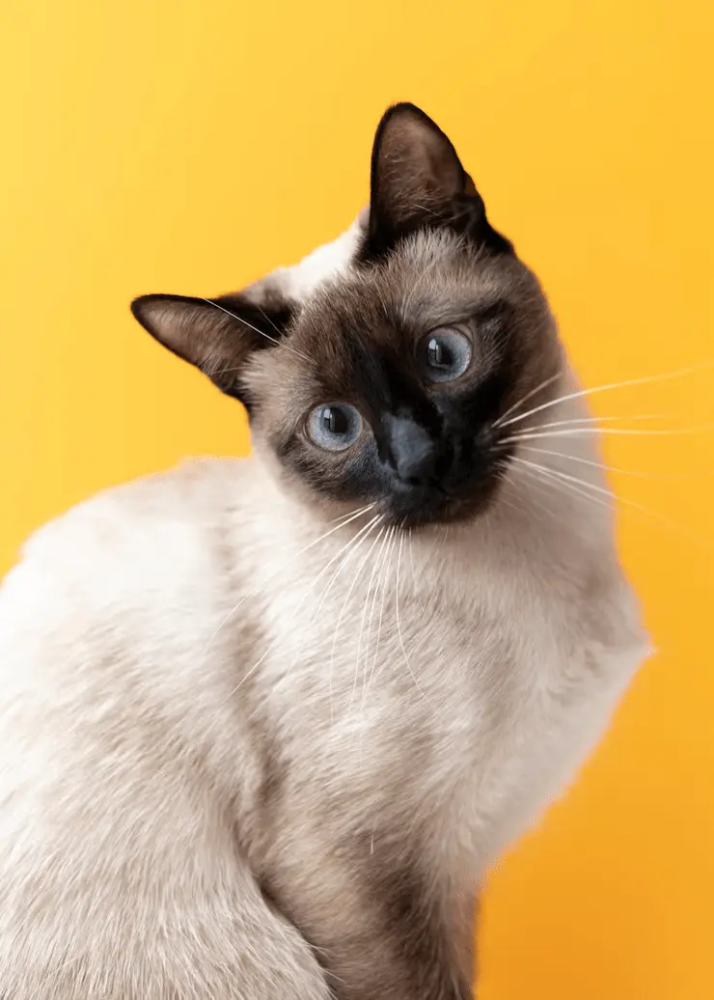
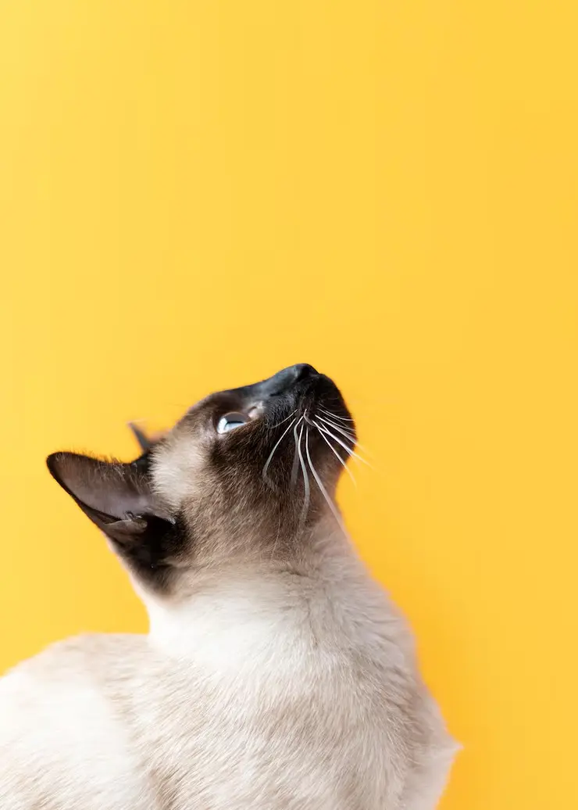
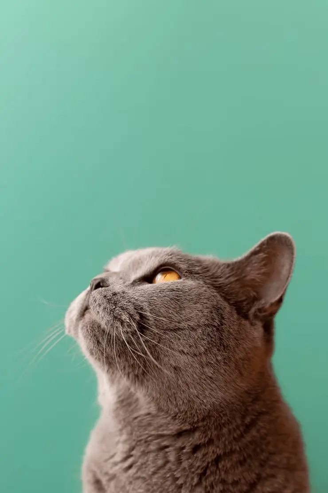

CatNature nació del amor por los gatos y el deseo de ofrecer productos que realmente respeten su naturaleza. Como amantes de los felinos, entendemos sus necesidades, sus gustos y su forma única de vivir. Por eso creamos una tienda dedicada exclusivamente a su bienestar, donde cada producto es elegido con responsabilidad y cariño.
Sobre Nosotros
Nuestra historia

Nuestro compromiso
En CatNature trabajamos con marcas que priorizan ingredientes naturales, materiales seguros y procesos sostenibles. Nuestro objetivo es ayudarte a cuidar a tu gato como se merece: con productos de calidad, atención especializada y un servicio que piensa en cada detalle.

Pasión por los felinos
No somos solo una tienda. Somos una comunidad que comparte la pasión por los gatos. Queremos que cada cliente se sienta acompañado y que cada gato reciba lo mejor. Desde comida saludable hasta juguetes, camas y productos de higiene, todo lo que ofrecemos está pensado para mejorar su día a día.

Conectados contigo
Creemos que cada gato es único, y por eso escuchamos a nuestros clientes. Ya sea que necesites asesoramiento, tengas dudas o quieras compartir anécdotas de tu michi, estamos acá para vos. Porque en CatNature, los gatos no son una categoría de productos: son familia.
